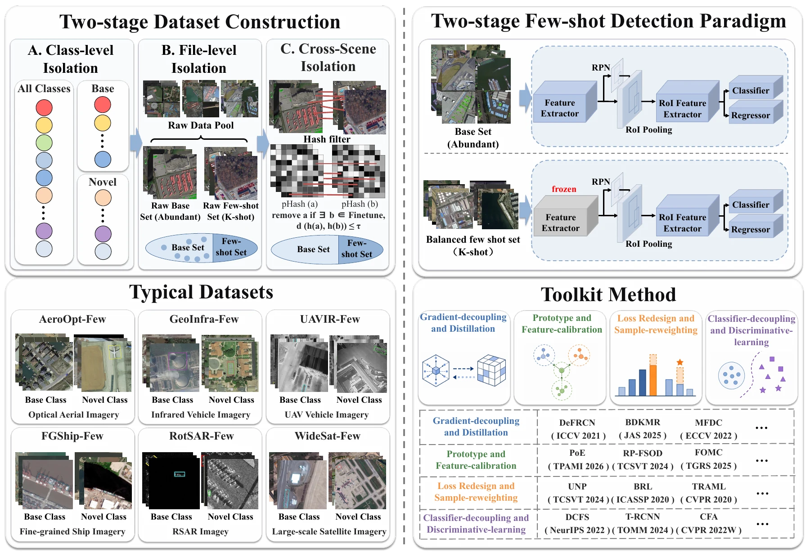

Scene Isolation Protocol
Cross-stage scene isolation via perceptual-hash filtering across six datasets.
Abstract. Few-shot oriented object detection (FSOOD) aims to adapt remote-sensing detectors to emerging geospatial categories from only a few rotated-box annotations. Existing protocols usually sample base-training and novel-support images from the same collections, allowing repeated geographic context to leak across stages. We introduce OBB-Few, a deployment-oriented protocol and benchmark suite that enforces cross-stage scene isolation on six datasets spanning optical, infrared, SAR, large-scale satellite, UAV, and fine-grained ship scenarios.
Cross-stage scene isolation via perceptual-hash filtering across six datasets.
Formal identification of cross-stage and intra-stage incomplete-annotation conflicts.
Class-adaptive dynamic masking with two-stage decoupled classification.
OBB-Few enforces cross-stage scene isolation between base-training and fine-tuning stages. Unlike conventional protocols that draw images from the same collection, OBB-Few requires that no context-equivalent observations appear across stages. This is enforced via file-level exclusion and perceptual-hash (pHash) filtering with Hamming distance threshold τ = 10.
During base training, novel-class objects are unlabeled and optimized as background, creating a “novel-as-background” prior before fine-tuning begins.
During few-shot adaptation, annotated and hidden foreground objects coexist in the same support image, receiving contradictory foreground/background supervision.

OBB-Few comprises six reconstructed remote-sensing datasets across optical aerial imagery, satellite imagery, synthetic aperture radar, infrared UAV sensing, and fine-grained ship recognition. Each dataset follows the same scene-isolated few-shot protocol.
AeroOpt-Few is reconstructed from DOTA, a large-scale optical aerial detection dataset. It contains 15 categories split into 10 base classes and 5 novel classes under three independent novel splits. AeroOpt-Few features dense small objects, cluttered backgrounds, and arbitrary object orientations typical of aerial surveillance scenarios.
RotSAR-Few is reconstructed from the RSAR dataset for rotated SAR object detection. SAR imagery presents unique challenges including speckle noise, scattering center responses, and radar shadow effects that differ substantially from optical appearance. It contains 3 base classes and 3 novel classes.
UAVIR-Few is reconstructed from the DroneVehicle dataset for UAV-based RGB-infrared cross-modality vehicle detection. It provides infrared and RGB paired images with large-scale variation and thermal signatures. With 3 base classes and 2 novel classes, it evaluates few-shot adaptation under thermal imaging conditions.
FGShip-Few is reconstructed from the Fine-Grained Ship Recognition in Complex Scenarios dataset. It focuses on visually subtle vessel categories including submarines, patrol vessels, oil tankers, and container ships. With 12 base classes and 5 novel classes, it tests fine-grained discrimination under limited support.
GeoInfra-Few is reconstructed from DIOR-R, a diverse optical remote sensing dataset covering 20 object categories across heterogeneous land-cover scenes. It contains 15 base classes and 5 novel classes, testing category transfer under diverse optical conditions including airports, bridges, storage tanks, and baseball fields.
WideSat-Few is reconstructed from the STAR large-scale satellite imagery benchmark for scene graph generation. It focuses on sparse and fine-grained geospatial targets across 27 base classes and 18 novel classes, making it the largest category-space dataset in OBB-Few. Absolute AP values are lower due to extreme category diversity and sparse target distribution.
Comparison results on all six OBB-Few reconstructed datasets across three novel splits and 5-, 10-, and 20-shot settings. Select any result preview to open the corresponding PDF.
@article{obbFew2025,
title={OBB-Few: A Comprehensive Benchmark for Few-Shot Oriented Object Detection in Real-World Remote Sensing Scenarios},
author={Anonymous Authors},
journal={IEEE Transactions on Pattern Analysis and Machine Intelligence},
year={2025}
}This work is supported by [funding information to be added]. The authors thank the contributors of MMRotate, MMDetection, and the open-source remote sensing community. The six benchmark datasets are built upon DOTA, DIOR, RSAR, FGSRCS, DroneVehicle, and STAR; we thank their respective authors for making these datasets publicly available.